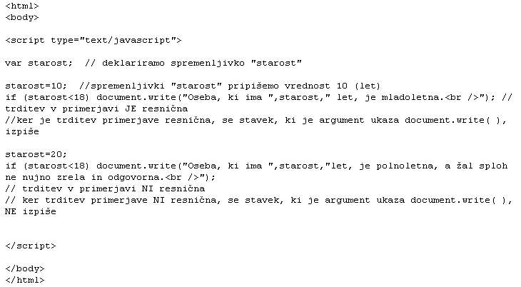
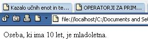

Bolj se je treba bati ženske ljubezni kot moškega sovraštva. (Sokrat)
  Slika 1 in 2: Primerjanje spremenljivk - koda in videz spletne strani 1. Izdelaj spletno stran, ki bo izgledala tako, kot kažeta sliki 1 in 2. Datoteko poimenuj "12apriimek.html". Ne pozabi na konènico ".html". POZOR: Najprej NATANÈNO izdelaj vajo v tej uèni enoti in jo pokaži profesorju, nato zapiši odgovore na spodnja vprašanja. 2. V kodo primera v tej uèni enoti vstavi spodaj navedene komentarje na ustrezna mesta, ki jih ti komentarji pojasnjujejo. //Znaèka, ki oznaèuje konec HTML dokumenta. //Spremenljivki "starost" priredimo vrednost "20" let. //Znaèka, ki oznaèuje zaèetek HTML dokumenta. //Znaèka, ki oznaèuje konec skripta v HTML dokumentu. //Znaèka, ki oznaèuje zaèetek skripta v HTML dokumentu. 3. Kodo primera v tej uèni enoti spremeni tako, da bo vsebovala napoved še ene spremenljivke z imenom "izobrazba". Spremenljivki "izobrazba" nato priredi vrednost "poklicna". 1. Vprašanja za usmerjanje pozornosti in usvajanje novih besed: 1. Kaj je naloga primerjalnih operatorjev? 2. V katerih stavkih uporabljamo primerjalne operatorje? 3. Katera sta dva mogoèa rezultata uporabe primerjalnih operatorjev? 4. Kako sta rezultata uporabe primerjalnih operatorjev oznaèena v JavaScriptu? 5. Kaj je pravzaprav primerjava dveh spremenljivk? 2. Zapiši od ene do pet kljuènih besed, ki povzemajo vsebino te uène enote. 3. Vprašanja za razmislek in povezovanje z lastno izkušnjo: 1. Koliko in katere spremenljivke smo deklarirali v primeru na sliki 1? 2. Kolikokrat smo spremenljivki na sliki 1 priredili vrednost? Koliko znaša vrednost v teh primerih? 3. Ali se stavek "document.write( )" na sliki 1 in 2 izvede v vseh primerih? V katerih primerih se izvede? 4. Zakaj se stavek "document.write( )" v primeru na sliki 1 in 2 enkrat izvede in enkrat ne izvede? 5. Kakšen stavek oziroma ukaz je torej "if (starost>18)"? 4. Domaèa naloga: 1. V zvezek prepiši misel, ki je zapisana na zaèetku uène enote z rdeèimi èrkami. Zabeleži nekaj lastnih misli, ki se ti utrnejo ob razmišljanju o njej. 2. Odgovori na vprašanja, na katere nisi uspel/a odgovoriti v šoli. 5. DODATNO DELO: 1. Izdelaj spletno stran, ki bo izgledala tako, kot kažeta sliki 1 in 2. Namesto operatorja za primerjavo pa uporabi po vrsti enega za drugim preostale operatorje iz zgornje tabele. Primere za posamezne operatorje si zamisli sam/a. Datoteko poimenuj "12bpriimek.html". Ne pozabi na konènico ".html". |